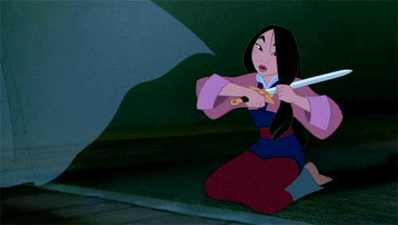

O RENASCIMENTO DA DISNEY (1989 - 1999)
|
Com o quase colapso, o estúdio decidiu voltar à proposta inicial: adaptações simples de contos de fadas, mas trazendo os elementos dos musicais da Broadway com canções e coreografias marcantes. O resultado trouxe o retorno da Disney a uma era de excelentes filmes que renderam várias premiações.
 O filme que deu o pontapé para o estrelato veio direto do fundo do mar: A Pequena Sereia foi lançado em 1989 e trouxe o brilho das produções da Disney com canções icônicas como “Under the Sea” e “Part of Your World”, que renderam dois Oscar em 1990. Esse período de prestígio deve-se graças a dois nomes: Alan Menken e Howard Ashman, responsáveis por comporem as músicas dos filmes que marcaram o Renascimento da Disney. A dupla participou no começo dessa época compondo, além do filme de Ariel, para outros clássicos como A Bela e a Fera e Aladdin - esse foi o último trabalho de Ashman antes de falecer, em 1991. Menken compôs a trilha sonora de outras produções da Disney desse período até os dias atuais; dentre eles estão O Corcunda de Notre Dame, Hércules, Enrolados, Encantada e o atual Desencantada. |